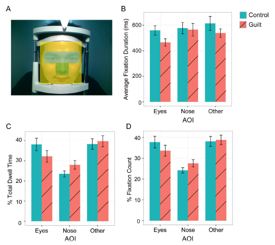

Seis pontos de olhar a menos
Trinta e dois participantes assistiram ao vídeo de uma pessoa levando choque. Quando o jogo dizia que a falha era deles, o olhar ficou nos olhos da pessoa em 32% do tempo que passaram olhando o rosto dela. Quando a falha era da própria pessoa, 38% (Yu, Duan e Zhou, Guilt in the eyes: Eye movement and physiological evidence for guilt-induced social avoidance, Journal of Experimental Social Psychology, 2017, seção 3.1.2). O olhar não some. Desce para o nariz.
Por que o culpado não encara a vítima
O estudo parte de uma pergunta simples: por que quem causou um dano evita olhar nos olhos de quem sofreu (Yu et al., 2017, introdução). Uma possibilidade que os autores levantam é que o contato visual com a vítima dispara a sensação de estar sendo julgado e acusado. Para quem se sente culpado, isso pesa mais, e desviar o olhar seria uma forma de evitação social: fugir do contato que dói.
A literatura anterior já tinha medido o que a culpa leva a pessoa a fazer, como pedir desculpa e compensar. Segundo os autores, nenhum estudo tinha medido o corpo durante a interação com a vítima. Por isso o estudo tem dois experimentos. No primeiro, o participante olha livremente para o rosto do parceiro, e um eye tracking, uma câmera que registra para onde o olho aponta, grava o caminho do olhar. No segundo, o participante é obrigado a fixar os olhos ou o nariz do parceiro. O que se mede ali é a condutância da pele, que sobe com a excitação emocional.
Culpa de laboratório tem de doer em alguém
A parte mais difícil de um experimento sobre culpa é fazer a pessoa se sentir culpada por algo que parece ter machucado outra pessoa. Ler um cenário e imaginar não basta. A solução dos autores foi montar um jogo com consequência aparente (Yu et al., 2017, seção 2).
O participante chega sozinho ao laboratório e encontra outra pessoa do mesmo sexo, apresentada como um dos jogadores. Ouve que quatro jogadores vão participar de um jogo, cada um numa sala. Ouve também que a pessoa que acabou de conhecer vai jogar com os outros dois, e não com ele, para tirar da conta a familiaridade e a distância social. Os dois parceiros dele são os outros dois jogadores, que ele só vê em vídeo. Para o participante, o jogo acontece ao vivo. Os jogadores, na verdade são pessoas combinadas com os pesquisadores, que se passam por participantes.
Antes do jogo, o participante recebe um eletrodo no pulso esquerdo e passa por uma calibração de dor. Ele classifica uma série de estímulos numa escala de 1 a 8 e depois recebe quatro períodos de 10 segundos de choque no nível 6. A instrução é que quem tiver de receber choque no jogo vai receber nessa mesma intensidade. Esse procedimento existe para a ameaça parecer real.
O jogo é estimar quantos pontos há numa imagem. O participante joga com cada parceiro em quatro blocos de dez tentativas, oito blocos no total. No começo de cada bloco, um sorteio aparente escolhe o participante ou o parceiro para levar choque se a dupla falhar. A dupla falha quando o participante ou o parceiro erra cinco ou mais das dez tentativas.
O resultado de cada bloco vem de um programa. Nos blocos em que o participante foi sorteado, a dupla acerta e ninguém leva choque. Nos blocos em que o parceiro foi sorteado, a dupla falha e o parceiro leva choque. Numa dessas vezes o resultado diz que a falha foi do participante, e essa é a condição de culpa.
Quarenta estudantes participaram. Oito foram excluídos, por não lembrar no fim quem eram os dois parceiros ou por erro na calibração do eye tracking. Sobraram 32, metade mulheres, de 19 a 24 anos (Yu et al., 2017, seção 2.3.1).
O estudo traz uma checagem de manipulação: a conferência de que a condição produziu o estado que se quer estudar. Depois do jogo, o participante responde numa escala de 1 a 7 o quanto se sentiu culpado em cada condição. A média foi 5,8 na condição de culpa e 2,4 no controle (Yu et al., 2017, Tabela 2). Sem esse número, o resto do estudo não teria o que explicar.
Contar para onde o olho vai é a parte fácil
O eye tracking registra a posição do olho 500 vezes por segundo (Yu et al., 2017, seção 2.3.2). Cada vídeo tem quatro episódios de 15 segundos, com 5 segundos de rosto neutro e 10 segundos de choque, mais 1 a 5 segundos de rosto neutro no final, para o vídeo não cortar na dor. Dá de 61 a 65 segundos.
Sobre o rosto do parceiro, os autores desenham três áreas de interesse: olhos, nariz e o resto do rosto. O painel A da figura mostra o recorte. Como o confederado ficou com a cabeça parada, as áreas valem para o vídeo inteiro.

O olho para num ponto, pula, para em outro. Cada parada é uma fixação, e as três medidas do estudo são contas sobre as fixações dentro de cada área:
- Tempo de permanência. A soma da duração de todas as fixações feitas numa área, dividida pelo tempo total de fixação no rosto. Responde quanto do olhar foi para ali;
- Contagem de fixações. O número de fixações numa área, dividido pelo total de fixações no rosto. Responde quantas vezes o olhar foi para ali;
- Duração média de fixação. A soma da duração das fixações numa área, dividida pelo número de fixações nela. Responde quanto tempo cada parada durou.
As duas primeiras viraram percentuais do total do rosto, para facilitar a comparação entre as medidas. A terceira fica em milissegundos. O tamanho de cada área não entra na conta, porque a comparação é sempre entre as duas condições dentro da mesma área. Na figura, os painéis B, C e D mostram, nessa ordem, a duração média, o tempo de permanência e a contagem.
Agora o modelo. Cada participante passa pelas duas condições e vê os mesmos parceiros. Cada um dos quatro confederados aparece nos dados de muitos participantes. Há gente que olha mais nos olhos por hábito, e há rosto que atrai mais o olhar. Se a análise ignorar isso, a diferença entre culpa e controle fica misturada com a diferença entre pessoas e entre rostos.
Os autores usam um modelo linear misto. Misto porque junta dois tipos de efeito. A condição, culpa ou controle, entra como efeito fixo, que é o que se quer estimar. Participante e parceiro entram como efeitos aleatórios, e cruzados porque cada participante vê mais de um e cada um é visto por mais de um participante.
Os olhos perdem, o nariz ganha, o resto empata
A Tabela 3 do estudo traz as nove combinações de área e medida. O valor entre parênteses é o erro padrão. O t é da diferença entre culpa e controle, negativo quando a culpa tem o valor menor, e “< 1” quer dizer abaixo de 1 em módulo, longe do corte. O asterisco marca t acima de 1,96 em módulo (Yu et al., 2017, Tabela 3).
| Área | Medida | Culpa | Controle | t |
|---|---|---|---|---|
| Olhos | Tempo de permanência (%) | 32,2 (2,9) | 38,2 (3,1) | −2,09* |
| Olhos | Contagem de fixações (%) | 33,6 (2,7) | 37,7 (2,8) | −1,57 |
| Olhos | Duração média (ms) | 466 (28) | 560 (36) | −2,35* |
| Nariz | Tempo de permanência (%) | 28,0 (2,2) | 23,5 (1,5) | 2,41* |
| Nariz | Contagem de fixações (%) | 27,6 (1,8) | 24,2 (1,3) | 2,36* |
| Nariz | Duração média (ms) | 565 (49) | 577 (43) | < 1 |
| Resto | Tempo de permanência (%) | 39,7 (2,7) | 38,3 (2,6) | < 1 |
| Resto | Contagem de fixações (%) | 38,8 (2,3) | 38,1 (2,4) | < 1 |
| Resto | Duração média (ms) | 539 (33) | 614 (55) | −1,47 |
Nos olhos, o tempo de permanência cai e cada fixação fica mais curta na condição de culpa, de 560 para 466 milissegundos. A parcela de fixações nos olhos também cai, de 37,7% para 33,6%, mas a diferença não passa do corte.
O nariz recebe o que os olhos perderam. Na condição de culpa, o tempo de permanência nos olhos caiu de 38,2% para 32,2%, e no nariz subiu de 23,5% para 28,0%. A parcela de fixações no nariz também sobe. A duração média não muda de forma que o teste detecte: as paradas no nariz acontecem mais vezes, com duração parecida.
Olhar para o nariz pode ser outra coisa
O estudo lista as próprias ressalvas, e as duas mudam o que dá para concluir (Yu et al., 2017, seção 4).
A primeira é a leitura alternativa do achado central. O participante culpado pode não estar fugindo dos olhos. Pode estar procurando a região do rosto que mais informa sobre a dor do outro. Os autores rebatem com um estudo em que pessoas buscavam ver o sofrimento de um rival, por prazer, e argumentam que quem se sente culpado dificilmente teria essa motivação. Eles mesmos dizem que não eliminam a alternativa.
A segunda ressalva é desse experimento. Para garantir que o grupo do nariz não visse os olhos do parceiro, os autores cobriram os olhos no vídeo com um retângulo preto. O grupo dos olhos viu o rosto inteiro. A diferença de condutância entre os grupos pode vir, em parte, da diferença de informação visual, e não só de onde o olhar estava preso. Os autores argumentam, com um estudo de expressão facial, que a informação sobre dor está mais na bochecha e no nariz do que nos olhos, e que por isso o grupo do nariz não viu menos dor. Um argumento ainda não é um experimento de controle.
Da próxima vez que ler um experimento desses, procure duas coisas antes da tabela de resultados. Procure sempre entender como o estudo foi desenhado, e como o dado foi medido, que diz se a condição produziu o estado que o estudo quer medir. Procure os efeitos aleatórios do modelo, que dizem o que foi tirado da conta antes de comparar as condições.